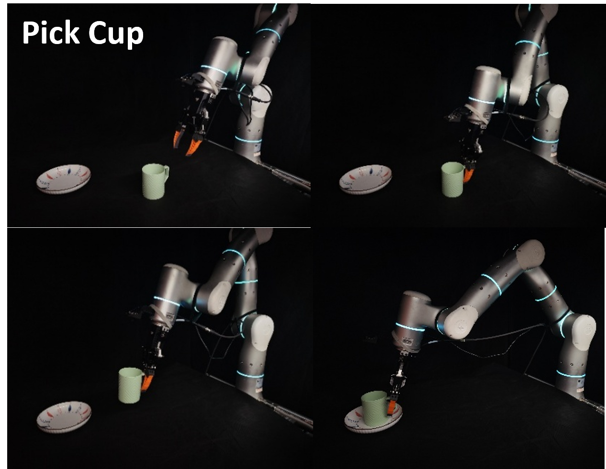
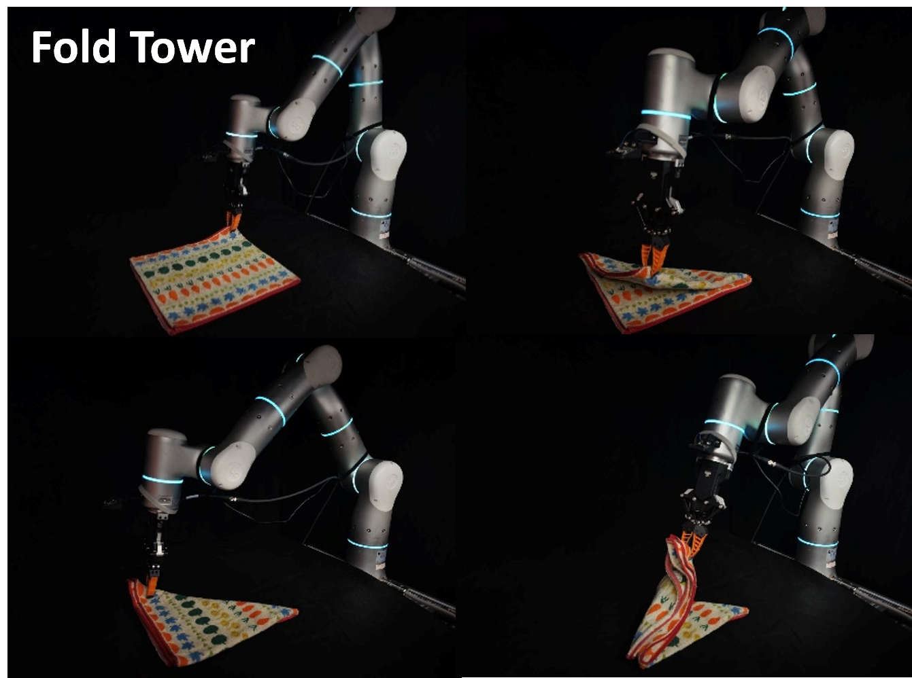
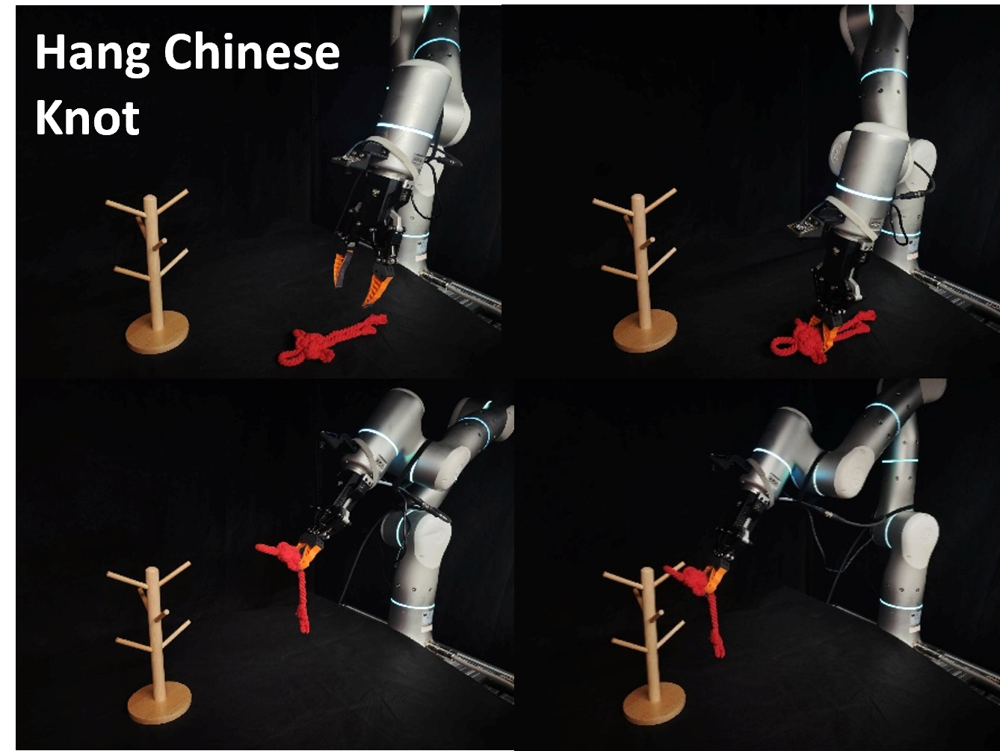

Main Results
We employ a normalized, multi-stage scoring metric for real-world evaluation to provide a more granular assessment of policy capability than binary success rates. Each evaluation setup consists of 20 trials, and we report the cumulative normalized score.
Task 1: Pick Cup
- Task Description: The goal is to pick up a cup from a random starting position and place it upright onto a designated coaster.
- Evaluation Protocol: We test the policy under two environmental settings: Feature-Poor (solid-colored background) and Feature-Rich (patterned cloths with diverse textures).
- Score Metric:
- Stage 1 (0.00 pts): Failed to grasp or place the cup.
- Stage 2 (0.50 pts): Placed on coaster but toppled over.
- Stage 3 (1.00 pts): Successfully placed upright on the coaster.

Task 2: Fold Towel
- Task Description: This task requires performing two consecutive folds on a deformable towel. The robot must grasp a corner, fold it diagonally, and then repeat for the second corner.
- Evaluation Protocol: Focuses on the policy's ability to handle deformable objects and maintain localization across multi-step sequences.
- Score Metric: Four stages (0.25 pts each) corresponding to: 1. Grasping the first corner, 2. Completing the first fold, 3. Grasping the second corner, and 4. Completing the final fold.

Task 3: Hang Chinese Knot
- Task Description: Requires precise rotational manipulation to hang a Chinese knot onto a designated hook on a stand.
- Evaluation Protocol: Since the initial grasping phase is successfully completed by most baselines, we focus solely on the precise placement required to secure the knot.
- Score Metric:
- Stage 1 (0.00 pts): Failed to hang (e.g., dropped or missed the hook).
- Stage 2 (1.00 pts): Successfully secured the knot onto the hook.
